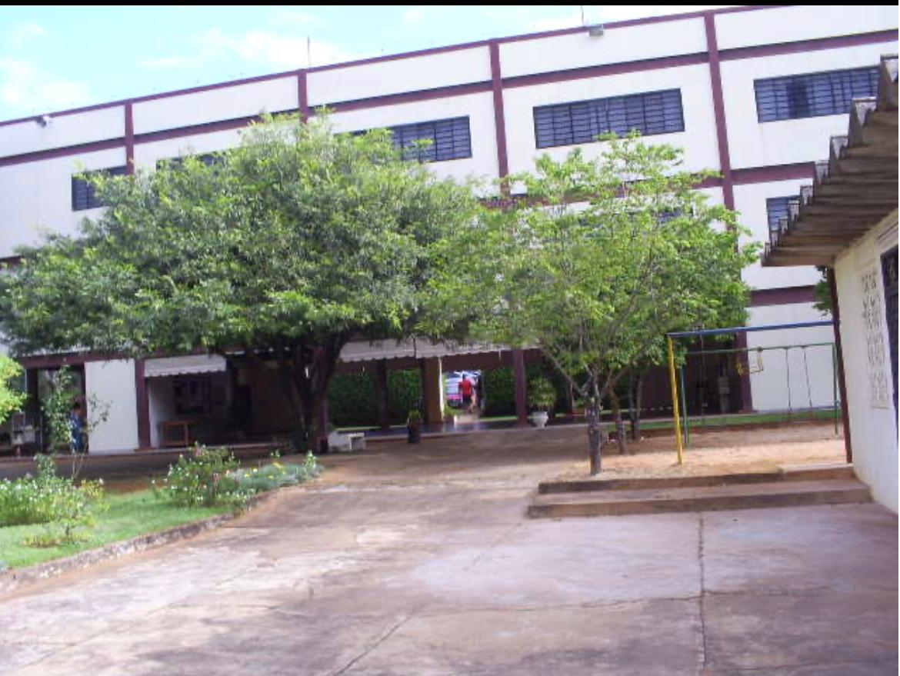

Je m’appelle Michelly Alves da Silva. Mon premier contact avec la langue des signes brésilienne (Libras) comence à mon enfance : dans mon quartier, il y avait un garçon qui s’appelait Fernando (aujourd’hui connu sous le nom de Macarrão, membre du groupe Surdodum). Nous jouions dans notre rue et, pour communiquer, il m’apprenait les signes. Puis, à 22 ans, lorsque j’ai changé d’église, j’ai découvert au sein de cette institution un ministère dédié à la langue des signes qui accueillait, en moyenne, entre 10 et 15 personnes sourdes. J’ai alors décidé d’acquérir les connaissances nécessaires pour transmettre la parole et les chants. C’est pourquoi je me suis inscrite et j’ai été tirée au sort pour suivre des cours de Libras sur le campus de l’IFB à Taguatinga, avec le professeur João Paulo Vitório;
Située dans le secteur QNH 1/3, zone spéciale 2, à Taguatinga Norte, elle a été créée en 2013. Il s'agit de la première école publique inaugurée dans le District fédéral. Les langues enseignées sont : la langue des signes brésilienne (Libras) et le portugais écrit ; l'établissement propose également des cours d'éducation des jeunes et des adultes (EJA) ; la méthodologie appliquée est visuelle. L'école est destinée aux élèves présentant une surdité légère à profonde, qu'ils soient porteurs d'un implant cochléaire ou non.
Située à l'adresse SGAS 912 Sud (modules 43-48) Asa Sul, elle peut accueillir jusqu'à 147 élèves et propose un enseignement à temps plein aux niveaux de l'école maternelle, du primaire et du secondaire, ainsi qu’un programme d’éducation précoce pour les bébés de 0 à 3 ans et 11 mois, conforme au PNE (Plan national d’éducation). Elle est reconnue comme établissement bilingue, respectant les besoins linguistiques des élèves sourds, et dispose d’enseignants maîtrisant la langue des signes brésilienne (Libras) (ayant passé avec succès des examens d’aptitude). Ses locaux comprennent 12 salles de classe climatisées, une cantine, des sanitaires accessibles, ainsi que des espaces administratifs et de services, le tout dans le but d’offrir aux élèves un environnement accueillant.

Depuis le premier trimestre de l'année 2015, et avec la création de la première promotion au second semestre 2018, son public cible est constitué de personnes sourdes souhaitant suivre des études supérieures.
Le groupe Surdodum, fondé par les musiciens Ana Lúcia Soares, Reinaldo Braz et Chiquinho Batera, a vu le jour à Brasília (DF) en 1994. Avec le soutien de musiciens entendants au chant, à la batterie, à la contrebasse, à la guitare et à la guitare acoustique, le groupe a fait figure de pionnier en matière d’inclusion. Les cours de percussion et de chant proposés par le groupe Surdodum sont gratuits et ouverts aux enfants et adolescents sourds, qu’ils présentent ou non d’autres handicaps. Afin de faire connaître son travail, le groupe organise des ateliers dans les différentes régions administratives de Brasília, et les enfants intéressés poursuivent les cours hebdomadaires au siège du groupe, situé dans le quartier d’Asa Norte. Ayant donné des concerts et participé à des événements dans plusieurs États du pays, voici une photo de l’un de ses concerts avec l’ensemble du groupe.

Fondée le 4 février 2007 par une commission composée de Deborah Dias de Souza, représentante de l'ASB, Fernando Jacomini Felicio, représentant de l'ADSB, Pedro Melo Soares de Morais, représentant de l'ASSURP, et Paulo Humberto Matos de Alencar, représentant de l'ASSME. Le 4 mars, la première présidente fondatrice, Deborah Dias de Souza, et le vice-président, Pedro Melo de Soares Morais, ont pris leurs fonctions.

A logo ou brasão acima com cores verde, azul e amarelo dão um significado voltado a arcos, e, subentende-se que busca trazer significados da capital Brasília; Sua principal preocupação é a democratização do esporte e lazer, participação dos campeonatos brasileiros, regionais e internacionais e a implantação de projetos sociais que beneficiem principalmente as crianças e jovens do DF. Você é surdoatleta e não tem a entidade para participar em eventos distritais, regionais, nacionais e/ou internacionais, basta nos procurar que indicaremos uma das nossas Entidades filiadas do Distrito Federal. O lema ou intuito é Não desista! sua vontade de participar nos eventos esportivos de Surdos. Endereço https://fbdsdf.org.br/
Central de Intermediação em Libras (CIL) é promover o acesso das pessoas com deficiência aos serviços públicos com acessibilidade de comunicação em Libras. Orgão que presta serviços tais como, acompanhar cidadãos surdos em locais, exemplos, Instituições bancarias, hospitalares, de justiça como delegacias e fóruns. Voltado para a Inclusão em que seu principal objetivo dar autonomia a Comunidade Surda e Surdocega

Fondé le 17 juin 1969, cet établissement s'adresse aux personnes malentendantes, qu'il s'agisse d'enfants, d'adolescents, de jeunes ou d'adultes. Il propose des cours de langue des signes brésilienne (du niveau débutant au niveau avancé)

Organisme caritatif à but non lucratif, actif depuis plus de 50 ans dans le District fédéral (DF), situé à Asa Norte, SGAN 909. Sa mission est d’offrir des soins spécialisés aux personnes relevant du SUAS (Système unique d’aide sociale), aux bénéficiaires du SUS (Système unique de santé), aux bébés, enfants et adolescents atteints d’un handicap auditif, ainsi qu’aux bébés et enfants présentant un handicap intellectuel et/ou de l’autisme ; en favorisant le diagnostic précoce, la rééducation, le soutien éducatif et l’inclusi mène ses actions et son travail avec une équipe pluridisciplinaire composée notamment de médecins, de kinésithérapeutes, d’assistants sociaux, de dentistes pédiatriques, d’orthophonistes, de psychologues, de pédagogues et d’ergothérapeutes. Elle a établi des partenariats avec le SUS, le SUAS et le système éducatif.